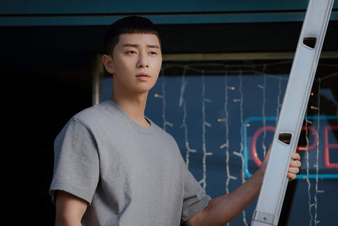

RVM

Profile
Câu chuyện cũng theo motif là nhân vật chính gặp biến cố lớn và quyết phục thù. Tuy nhiên, câu chuyện phục thù mang hơi hướng đan xen giữa film Western và HQ. Không phải lúc nào cũng tăm tối và deep deep tâm trạng kiểu film HQ chủ đề phục thù mà có tinh thần lạc quan và đầy năng lượng của film Western. Câu chuyện có những chi tiết bất ngờ nhưng dẫn dắt vẫn rất logic, không dài dòng lê thê mà vẫn lột tả tốt tâm trạng nhân vật. Chủ đề khai thác xung quanh start-up, leadership và brotherhood chứ không chỉ xoáy vào sự hận thù nên cũng giúp mình có những cái nhìn mới về Văn Hoá HQ, Bí Quyết Kinh Doanh và Khả Năng Lãnh Đạo.
Nhân vật nam chính lần này không phải con rơi của CEO, không phải hoàng tử thất lạc, không phải thần đồng hay nhân tài xuất chúng, bạn này đơn giản là một anh trai có quá khứ đau khổ nhưng vẫn giữ niềm tin vào chính mình, không bao giờ nản chí, quyết tâm cao và biết trân trọng những giá trị cuộc sống. Quá trình xây dựng nhân vật và chọn cast đều được làm rất tốt, mang lại màu sắc mới giữa rất nhiều K-Drama. Nhân vật nam có sự điềm tĩnh, lạnh lùng nhưng đầy cảm xúc theo một cách rất đàn ông, không cần nhỏ giọt nước mắt để thể hiện sự đau khổ nhưng biểu cảm trên khuôn mặt lại thể hiện rất tốt. Không theo kiểu lạnh lùng băng giá đặc trựng kiểu HQ, hành tung khó hiểu, tình cảm không nhất quán hay yêu mà không nói. Nhân vật này yêu ghét rõ ràng, nhất quán, sống thật với cảm xúc và hành xử như một mẫu người đàn ông Hàn Quốc chính hiệu mà mình trông đợi: Ưu Tiên Sự nghiệp - Tình Cảm Rõ Ràng - Chơi Đẹp!
Tuyến nhân vật thiện - ác không đơn thuần là ác thì luôn chơi xấu và không có tài và thiện thì phải ngờ nghệch và trông vào may mắn. 2 nhân vật một già một trẻ đại diện cho 2 thế hệ làm kinh doanh dùng thương trường để phân thắng bại, để chứng tỏ khả năng bản thân hơn là trả thù. Người Trẻ học hỏi từ Người già. Người Già vẫn muốn chơi một ván bài kinh doanh để thử thách Người Trẻ.
Trong tâm thế phục thù nhưng Người Trẻ vẫn giữ sự tôn trọng với những giá trị của thế hệ đi trước và quyết chiến thắng bằng năng lực của mình.
Tình yêu cũng là một phần quan trọng trong câu chuyện. Không uỷ mị mà lại rất mạnh mẽ, đầy cảm xúc và nhiệt huyết của tuổi trẻ. Một cô gái genius nhưng bị psychopath (hơi có vấn đề tâm lý) rất rational khi làm kinh doanh và cũng rational một cách thú vị trong chuyện tình cảm - “If I like it, I'll do it and I have never fail”. Vì giữ suy nghĩ này mà đã theo đuổi cậu bạn Park suốt nhiều năm trời.